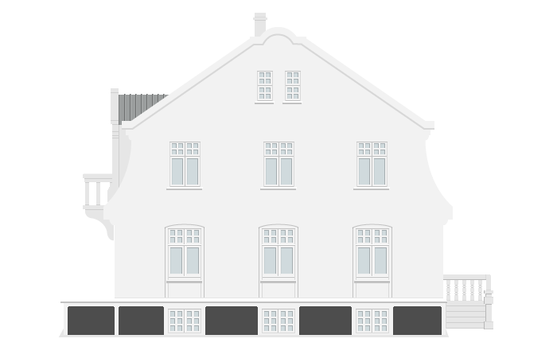

Unuhús
Garðastræti 15
– Byggt 1896
Líkn
Árbæjarsafn
(áður
Kirkjustræti 12
) – Byggt 1848

Hannesarholt
Grundarstígur 10
– Byggt 1915
Félagsbakaríið
Vesturgata 14
- Byggt 1881
Viðeyjarstofa
Viðey
- Byggt 1755
Vaktarabærinn
Garðastræti 23
- Byggt 1840-50